I’ve been thinking a lot about science fair lately, so I decided to get an early start this year on my project.
Last year in 10th grade, I completed an AP course in the java programming language in which many important data organization concepts, collections, mathematical algorithms, and object-oriented designs were emphasized. Over the past few years, I've also made it a point to become a well-rounded programmer by learning parallel concepts in perl and C++. Additionally, I've been practicing a multitude of graphical applet aspects in java, and I've even tried a little bit of opengl programming in C++ (although I have much more experience and comfort with applet APIs and the swing/awt libraries).
Last year I combined my love for programming with my interest in a traditional science. This year, I would also like to combine another area of science with computer programming. At the moment, I have two ideas:
To combine music and directx, I would like to make a program under C++ that takes microphone input and composes music to the screen based on the rhythm and the pitch. A slider would allow the user to choose a tempo, and a blinking metronome would show the tempo at all times (this would be used to determine the rhythm of the notes). Then, possibly, the user would be able to add articulation. The purpose of this program would be to make an "automatic composer" compatible with any instrument (not just the ones that can be plugged into the computer's MIDI port). Some other features could include printing capabilities and the option to save music into a MIDI file. To do this project, not only do I need to figure out how to do windows programming to have a nice user interface, but I need to figure out how to use low level Directx libraries to analyze sound waves to determine pitch and amplitude.
My alternative option would be to combine physics and opengl. Recently, I've been deriving some trigonometric equations that allow for the appearance of motion around a 3D world. I could find some situation to simulate that included lots of physics topics. Therefore, some sort of motion or collision detection would be included in the science project. For example, with the use of proper lighting and a particle engine, I could simulate an asteroid going through the earth's atmosphere at a chosen speed. Before doing this, though, I would have to research a lot more about quaternions and matricies to be comfortable with 3D rotation axes and motion on an x,y,z plane.
At the moment, the musical choice sounds more appealing to me since I'm not as comfortable as I should be with physics to do the opengl idea. I may save the latter idea for senior year after I've had a whole year of honors physics and a half a year of AP physics II. Even so, the automatic composer is still going to require a lot of research about directx, and I may even have to find a new C++ compiler besides Dev C++ to be able to compile these types of programs. June 18, 2005:
Today, I decided to look around online for some tutorials on C++ in order to brush up on some topics. I used the following two sites: www.cplusplus.com www.cprogramming.com
Although I had made many programs in C++ before, I knew that it would be important to research some more complex topics if I was going to make such a large project. Due to the fact that java and C++ are so similar, it was relatively easy for me to pick up some of the more complicated topics. Now that I'm finished, I feel much more comfortable with object oriented programming, structures, pointers, and dynamic memory. After some practice, I think I may be as comfortable with C++ as I am with java. The fact that I've had lots of practice organizing efficient code will certainly help me along the way with this project. My next step in the project, therefore, will be to find out more about Directx libraries, especially the DirectSound one.
June 22, 2005:
I've had some very frustrating experiences lately with my research. I'm having a very hard time finding a good tutorial about Directx. Because of that, I decided to try a little bit of windows programming first (I'll need it to use Directx). I found a pretty good tutorial about windows programming in C at the following link: www.winprog.org
I really wanted to start right with the Directx, though, so I went directly to Microsoft's site to find out what they had to say about the DirectSound libraries (Microsoft is, after all, Directx's creator). http://msdn.microsoft.com/library/en-us/directx9_c/DirectX/htm/directsoundccreference.asp?frame=true
It all looked pretty promising. I downloaded the Directx SDK for Windows XP and everything. However, I was having a really hard time getting any of their DirectSound examples to compile in Dev C++. To help the situation a little bit, I downloaded the free Visual C++ compiler from Microsoft that was built into the console. Not even this would work, though, for I kept getting strange errors even when I found the correct include files.
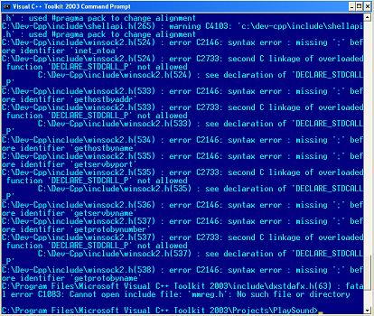
I can see this all leading me down a path that I do not want to visit. I really don't want to waste hours looking haphazardly through forums trying to find answers to various problems with the code and/or the compiler. Instead, I think I'm going to switch back over to java for this project idea. Nothing will change about the idea aside from the language that's implementing it, and I'm going to go look on the java.sun.com site now for documentation on audio input and processing. Perhaps I will revisit C++ and directx after I get a stable "automatic composer" working as a java applet, but I'd like to begin coding a working program as soon as possible. It seems like everything is much more doable for me in java at the moment.
June 30, 2005:
About a week ago, I found a great site that explains audio input processes (among other things such as MIDI programming) in java on the official java domain: http://java.sun.com/j2se/1.5.0/docs/guide/sound/programmer_guide/contents.html
Lots of code examples are provided, and it assumes little prior knowledge about these topics (perfect for me). Just looking at this tutorial, I've gotten a few ideas already about additional features in my program:
Give the user the option to have midi playback and have the user save into midi format
Have a nice user interface with menus that allows choices about microphone sources and Line info
Obviously, I'm going to have to implement the ideas of clefs, time signatures, and key signatures at some point, but I'm just going to get a basic program down first that shows me the letter and octave of a particular note streaming into the microphone
When I got to the end of chapter 3 here ("Accessing Audio System Resources"), I found out that only an application running without a security manager is aloud to both play and record sound. For this reason, I'm going to have to launch an application (applet-type window) from the console instead of from the regular browser. Since people would be able to make applets that act like bugs invading privacy, this security measure is understandable. The user now must manually open the program through the jvm in the console. This isn't really a big hassle for me as the programmer, though, because the only thing extra I have to do is make a main() function that launches a JFrame instead of having a JApplet using the init() method after being called by the HTML applet tag
July 16, 2005:
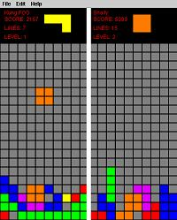
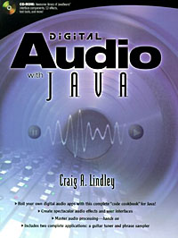
My two player tetris game
My awesome sound processing book find
Since my last entry, I've accomplished a good bit with my project. First of all, to practice some java topics I hadn't really tried before (namely threads, timers, and menu bars) I made a two player tetris game.
I used [http://www.math.hws.edu/javanotes] to help me out with these topics (a great site for finding out information about applets and layouts in java...I've been using it for over a year now). This will save me a lot of time later when I go to make an intricate layout for my program.
As far as the sound research goes, I realized that the sun site only provided information for sound input and output, not for sound processing.
Luckily, though, I was able to come across a really good book title (Digital Audio with Java by Craig Lindley), and this just arrived on my doorstep this morning from Amazon.com. Even though it's a bit dated, I've found that it provides some vital low-level code and algorithms just by skimming through it a little bit. The first 1/3 of the book mostly talks about developing java beans for a user interface (I'm going to skip this part since I'm coming up with my own algorithms for that), but the rest of the book looks really promising. My plan is to read over this book for a while until I've finished most of the sound processing part. Then, I'm going to make a sound program that loops through continuously and gives me a pitch value when I play my violin. It's going to be very basic compared to the larger picture I described initially, yet I still expect this to take me to the end of the summer. My next update will include code excerpts and screenshots from this small program.
Oh, and one last idea for the day. To test the accuracy of my program when it's finally finished, I'm going to have three different pages of sheet music. I'll deem one SIMPLE, one MEDIUM, and one DIFFICULT. I'll then print out the sheet music that the program feeds to me after I play them and compare each note. 50% of each note will be pitch, and the other 50% will be rhythm (or equivalent rhythm). A total accuracy will be counted up at the end. Also, I may or may not include dynamics in the program, but the user would have to calibrate the program to mezzo piano (a medium dynamic) with a particular instrument in the beginning in order to do this. Obviously, I'd have to work directly with the amplitude values of the sound waves if I was to do this.
****Speaking of accuracy, a practical application of this program could be to test the accuracy of deaf people when they try to sing notes. In a sense, this program could teach them to sing by pointing out their mistakes during the recording session.
July 18, 2005:
I just got all of my AP results back today, and I received a five (5) on the AP computer science test for java!! This justifies further my decision to use the java language over C++ at this time.
October 4,2005:
Obviously, it's been a while since I put too much thought into the project, but it's time for me to pick it back up since our proposals are due very soon. Last night, I began to look a little bit more into the math and physics behind sound and sound waves. My next goal is to use the Fourier transform methods to break down a complex sound wave into its individual components during analysis. For the time being, though, I simply decided to use the Microsoft Sound Recorder program to clarify the relationship between pitch and frequency. Here are the regular patterns produced by the different notes:
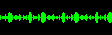
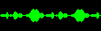
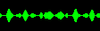
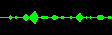
The E string
The A string
The D string
The G string
NOTE: The notes go from highest in pitch to lowest in pitch from left to right
The "E" string, which has the highest pitch, visibly has the highest frequency, while the low-pitched "G" string has the lowest frequency. Therefore, pitch is directly proportional to frequency.
October 16,2005:
Over the past week, I've been able to find some excellent sources on java sound in addition to the normal java.sun.com documentation. Primarily, Richard Baldwin at dickbaldwin.com has published many tutorials on sound manipulation in java. Using some of his sample code in addition to my own knowledge, I was able to construct a test program that samples sound into a byte buffer. Then, it merges these low-level bytes into a ShortBuffer object for analysis, and it writes them into an HTML file as a table. Since the sample rate was actually 16000 samples per second, I had a ton of data there when I sampled my voice for two seconds, so I simply took about 1/40th of a second of this data and graphed it in excel. Here is the regular pattern that resulted from this:
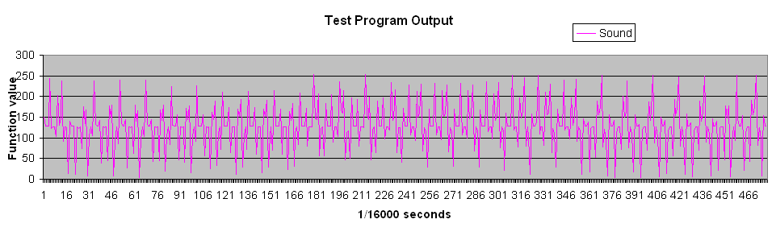
Now that I've proven to myself that I can actually access the low-level, inputted sound data values, I am ready to process these values in a Fourier Transform algorithm. This will eventually allow me to analyze the pitch of my inputted sound.
October 20,2005:
I recently realized that there was a problem with my previous methods of interpretation when I tried to make a 440 frequency sample graph in excel to compare to me playing an "A" on my violin. Clearly, I am using the wrong byte interpretation algorithm, for none of my values are negative (usually indicated by the most significant byte), and they vary very little. Thus, I must check to make sure that I am checking the most significant byte first and that my sound samples really are as large as I think they are. Maybe I'll even try to use the super-compressed mu-law format below just so that I know I'm getting the sound input correctly.
October 22,2005:
I finally found a solution to my data interpretation problem today. I can actually still use the uncompressed linear PCM format for more precision, as it is directly compatible with other data structures in java apparently, including the ShortBuffer that I will primarily be using to interpret my data. Each element in the ShortBuffer is a "short" (obviously), which takes up two bytes in memory. It also apparently stores these values using linear PCM format with the bigEndian (most significant bit/byte first) format. Thus, if I set up my AudioFormat object (tells in which format to store sound in memory) correctly, then I'll be able to directly pass the byte array storing all of my sound into the ShortBuffer using the following two lines of code (assuming that all of my sound is in an array of bytes somewhere):
Here are the parameters that I'm going to have to pass to the AudioFormat object:
16000.0 samples per second (a "medium" quality of data precision that should allow me to get enough cycles of frequencies)
16 bits (2 bytes) per sample (compatible with the "short" variable type"
1 input channel
Signed storage is set to "true" (positive/negative instantaneous amplitude values)
bigEndian format is set to "true"
It is important to note that since I have sixteen bits per audio sample, the maximum range of the amplitude readings is -32767 to 32767. This is much more precise than the -127-127 range that I would have gotten had I used 8 bit Mu-Law compression
October 29,2005:
Over the past week, I have been testing code now that my data interpretation techniques are correct. Before I go any further, though, I must explain the Discreet Fourier Transform algorithm that I will be using to isolate frequencies from a complex sound waveform. Below are some facts about the math/science aspect of my project:
A frequency is how "frequently" a wave goes through its period (one revolution of its pattern) per unit time. It is often expressed in hertz (hz: cycles/second), which is what I will be using in my project
Sound waves are really just the sum of a bunch of these sine or cosine frequencies. Since sound waves are pressure waves, they displace air molecules in a periodic fashion, which later impinges upon our ears (or on a sensitive fiber in a microphone) and gives the perception of sound.
EXAMPLE: A 440hz note is perceived as a "concert A"
The average of the instantaneous function readings over a whole number of cycles is key in the Discreet Fourier Transform. Normally for a periodic wave function, regardless of complexity, the area under the positive and negative regions of the curve will cancel out, making the average reading exactly zero.
However, when multiplying the function of a particular frequency by the function of a wave containing that frequency, the average is above zero. This is proveable by the product trigonometric identities.
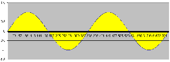
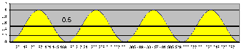
The average of the sin(X) function is zero
The average of a sin(X)^2 function is 0.5
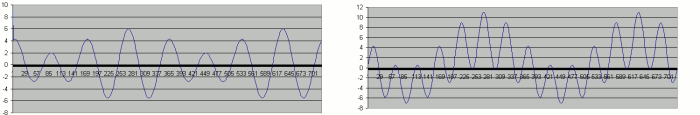
The first graph shows a complex waveform containing a 3hz sine frequency, where the average is zero. The graph to the right shows the result of multiplying a 3hz sine frequency by the function (the average is clearly above zero)
Using this concept of averages, it is possible to calculate the power of an entire range of frequencies. When the program runs, I will use the following expression to calculate the average of samples (as opposed to the integrals under a smooth graph) for all of the frequencies in the range of a chosen intrument:
N-1
__
\ z =(1/N) * / x(n) * y(n)
--
n = 0
N represents the number of samples, x(n) represents the series of captured samples, and y(n) represents the sine or cosine function. To calculate the power for a frequency, I will be summing the square of the result of the cosine as y(n) [real component] and the square of the result of the sine as y(n) [non-real component] in the above expression. (Full Derivation was found at dickbaldwin.com)
When I make a program to implement this, the sound sample size that I'm going to be applying to the equation is going to depend on the tempo that the user chooses (The slower the tempo, the larger the sample size). With larger sample sizes, a higher percentage of full cycles of the wave is collected. Since the Fourier Transform depends on a whole number of cycles for the power reading to be accurate, I definitely expect this to cause some problems in the future. Thus, I will probably test under very slow tempos and advise the user to do the same.
November 13,2005:
I recently coded a program to do a "spectral analysis" of the frequency content coming in through the microphone, and I have been testing it for a couple of weeks. Later on in my development, I would like to keep this program as an optional tool to use outside of the main AutoComposer program. In this entry, I will show a few screenshots and then explain some of the most important sections of code, as it sets the groundwork for much of the digital sound processing that I will have to do later.
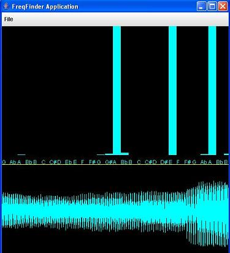
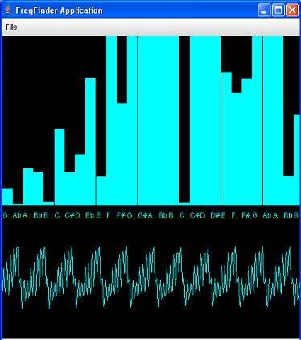
Playing an A on the G string (1 second sample)
Playing the open A string (50 millisecond sample)
In the top half of the graphical user interface, there are a whole bunch of note names that are associated with frequencies, starting with a 196hz open G and a 988hz B (on the E string). The solid bars going up indicate power, making it a graph of power vs. frequency. Below that is an area of the screen used to show the waveform (amplitude vs. time). The user has the option to choose the sample size in the "File" menu. As seen in the pictures above, a smaller sample size makes the Fourier Transform less accurate, as other unwanted frequencies seem to be there but really are not (probably because the sound wave hasn't finished an integer number of cycles).
Now it's time to discuss the code. First of all, two files are involved here: DSP.java and FreqFinder.java. FreqFinder.java is the main program that launches the application window, does all of the drawing processes, and gets the sound input, while DSP.java is a public class used to interpret the sound bytes with a Fourier Transform and to figure out on which frequencies to calculate it. Here are some fragments from DSP.java (150 lines at current):
Here's where I actually implement the Fourier Transform math:
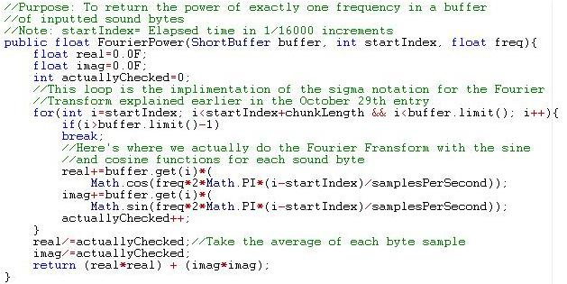
This method works hand-in-hand with FourierPower() to check the power of every frequency 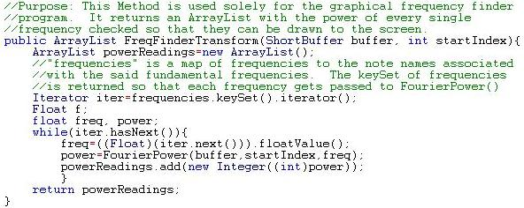
Here are some other noteworthy methods and variables used in DSP.java:
public void loadFrequencies(String str): This method accepts a parameter that tells the location of a profile file with a list of frequencies and their associated note names. It then puts them into a map as a Float frequency object with an associated String note name.
public DSP(int c, int ss): This constructor accepts two parameters: the "chunkLength," or the size of the buffer determined by the sample size (can be changed during the program run), and the "samplesPerSecond" variable that is vital to the FourierPower() method. Some other instance variables are also initialized here, such as the "minPower" variable used in the actual program to cut off frequencies below a certain power.
Now let's look at how FreqFinder.java uses the DSP class to manipulate all of the information in a user-friendly fashion:
This is where all of the input and processing takes place: 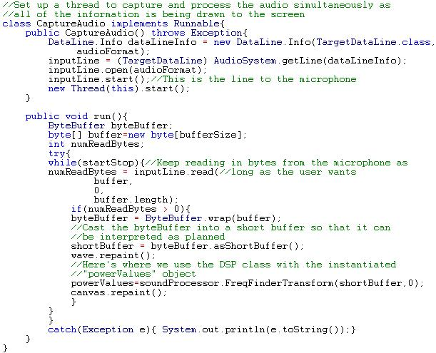
The code below is part of the WaveDisplay class that draws the complex waveform to the screen every time the buffer is filled. Essentially, it sets up a pixel ratio on the y axis so that the amplitude range fits into a 200 pixel height, and it sets up a pixel ratio on the x axis based on the size of the buffer at that time. Each iteration of the loop yields a line segment between one amplitude sample and the next amplitude sample in the buffer based on the calculated pixel ratios.
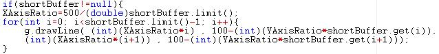
December 18, 2005:
I've run into yet another problem with the sound processing algorithm as it stands. Apparently, when I play each note on my violin, there are some frequencies contained in the sound wave in addition to the fundamental frequency. These other frequencies are called harmonics. Each harmonic is an integer coefficient of the base harmonic. For instance, the harmonics of a 400hz open A should be 880hz (first harmonic), 1200hz (second harmonic), 1600 hz (third harmonic), etc. I was lucky enough to find an excellent source about harmonics at the following link: http://www.phys.unsw.edu.au/music/
There, I found out that the harmonics patterns sometimes cause a soundwave to repeat a "sawtooth" pattern. I found that this was the most prominent when playing a 440 A:
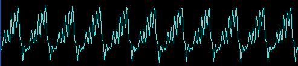
When programming the Automatic Composer for real, I plan to say that a note exists only if the fundamental frequency and the first four harmonics are all above some minimum power level. However, right now I'm having a difficult time determining where this minimum power level is, and sometimes the program is tricked into thinking that other notes with similar harmonics are being played. Therefore, I am going to begin the arduous task of designing the graphical user composing interface without the sound input for now. Instead of getting sound input, I will have a violin on which the user can move the mouse to designate note input. This way, I can develop all of the aspects for the sheet music such as key signatures, time signatures, etc. while I'm trying to figure out what to do next with the sound. Here is a rough idea that I have for the layout at the moment:
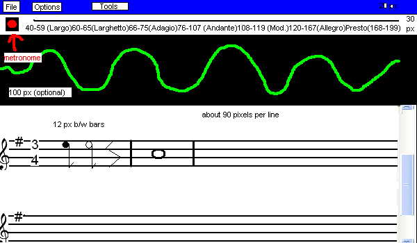
If the user is not doing an automatic session based on the sound input, then an interactive image of a violin should go in place of the waveform.
December 27, 2005:
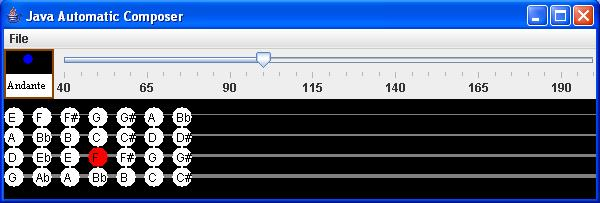
I recently finished a large portion of the GUI in which I allowed the user to manually press positions on the violin fingerboard to compose at a chosen tempo. To get the note names on the fingerboard in the proper order, a key signature is loaded in from a text file that gives the note names associated with each midi note and their position on the scale based on the chosen key signature. A metronome lights up in the upper left hand corner, and the program is capable of figuring out for how many 16th note beats the user is holding down a particular note by using a timer. Now, the MainGUI class is broken down into the following subclasses:
MusicDisplay: Unfinished at the moment, but it will be the large, scrollable area at the bottom of the screen to which the sheet music is drawn based on the rules of music theory.
TopDisplay: This is the class the either displays a fingerboard (if the user is manually composing by clicking) or a sound wave representing the incoming data. In the former case, the MouseListener interface is implemented to detect when the mouse is within range of the circles representing different spots on the fingerboard.
Metronome: This class is set up to draw the square in the upper left hand of the screen that helps the user keep time. Based on a chosen temp, two timers are set up: blinkTimerListener (changes the dot from blue to red each beat) and sixteenthListener (checks to see how long the user has been pressing on one note based on the StopWatch class, and adds a sixteenth rhythm with the proper midi note number to a static collection in the SoundSample class).
Another very important class has been set up to record the notes as they are coming in: the Note class. Here is a quick overview of its most important methods:
public Note(int midi, float scalepos, char notename, char sharpflat, boolean accidental): This is the primary constructor for the object. Each Note object has a midi number that is associated with it, it has a position on the scale, it has a note name from A-G, it is either sharp(#), flat(b), or natural( ), and it could be an accidental based on a particular key signature (discussed later)
public static getFreqfromMidi(int num): Calculates the base frequency of a note based on its midi number
****public static TreeMap loadKeySig(String str): One of the most important methods in the entire program. Given the name of a key signature, it will read in a file with ".dat" on the end of it in the "Keys" folder. It will then go line by line, constructing Note objects and adding them to the TreeMap as values associated with an Integer key object storing their midi number. Here is a sample line from the "G Major" key signature file that must be interpreted:
63,0.5,Eb,1
63 is the midi number, 0.5 means that the note goes through the first bar in the music, Eb tells us that it is an "E flat," and 1 at the end tells us that it is an accidental in the key of G Major.
January 15, 2006:
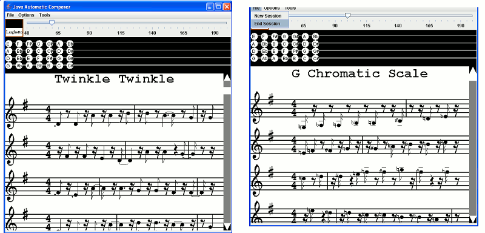
As can be seen by the two manually-composed pieces above, the music theory aspect of the program is finally completed (with the exception of accidental detection, which will come in later). The purpose of this entry will be to go over the most important methods in
the SoundSample class, which is where all of the drawing is done (and, hence, where all of the music theory comes into play). An instantiated object is used to store information about an isolated sound sample, while many other static methods deal collectively with many SoundSample objects in the music ArrayList to draw that big region on the screen with all of the notes.
public SoundSample(int midinum, int length): The main constructor for a SoundSample object that stores its midi number and the length in sixteenth notes
public void setLink(): This method tells the program to tie this note to the next note. This could happen either if the note is composed of a very eccentric rhythm or if it is being held between two measures
public static ArrayList getModifiedNotes(int maxPerMeasure): Up to this point, the music ArrayList object stores all of the gathered music as sixteenth notes. It is the job of this method to merge many samples of the same note in a row into eighth notes, dotted eight notes, quarter notes, dotted quarter notes, half notes, dotted half notes, or whole notes. It also divides the notes up properly so that they fit into a measure. For instance, in a 4/4 time signature, sixteen sixteenth note beets can fit into a measure. Each time this limit is exceeded and a note is still being held, it is tied to the next measure. The collection returned at the end has all of the notes in their proper rhythms with indications as to whether or not each note is tied.
public static void addSplitrhythm(ArrayList a, int midiNum, int noteSize, boolean linksNext): A helper method for getModified() notes that splits up eccentric rhythms into tied ones that can be drawn by the program. Every note that is processed in the getModifiedNotes() method must pass here to be inspected. For instance, a note that was seven sixteenth notes long would be split up into a dotted quarter note tied to a single sixteenth note. If the note was a rest, on the other hand, it would be split up into a quarter rest, a half rest, and a sixteenth rest, for there is no such thing as a "dotted rest."
public static void drawNote(Graphics g, int xpos, int ypos, Note n, SoundSample s): Given a Note object and an associated SoundSample object that stores its rhythm, this method will draw a note to the specified position on the screen. If the note is past the second bar, then the tail points downward. Otherwise, the tail points upward. Ledger lines are also drawn for lines that are above the scale or below the scale, such as the low G or the high B flat. The drawArc method is used to draw ties between notes.
public static void drawRest(Graphics g, int x, int y, int length): This method does exactly what it says. Whole rests and half rests are just rectangles, but all of the rest of the images are too difficult to draw, so they are imported as static images in the Settings class.
public static int drawMusic(Graphics g, Settings settings, int scrollpos): This method ties everything together. First, it uses FontMetrics to figure out how to position the title on the screen. Then, it begins to draw all of the notes, indicating the key signature on the left of each new line and drawing thick, vertical lines at the end of each measure. After it is finished executing, it returns and integer that tells how many pixels down the music had to be drawn, which helps a scrollbar that I created in the MainGUI class to figure out the bounds of the display area.
January 29, 2006:
I finally finished linking together all aspects of my program. In other words, the "Automatic Composer" is operational. This means that the program can now record sound and turn it into sheet music. Here is a screen shot of the recording process in the MainGUI:
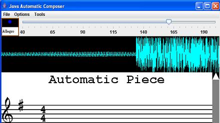
Here is the basic flow of the program now with this addition:
Keep taking in and storing 5000 bytes of audio input into a ByteArrayOutputStream object (like a huge buffer).
When the user has finished recording, pass all of the data as a short buffer to the DSP class's new method makeMusic(ShortBuffer buffer) for processing.
Calculate the length of buffer needed to interpret for one sixteenth note: sampleRate*timeSigBottom/(16*tempo)
Do a Fourier transform on every sample until the end of the buffer is reached.
Calculate the power of the fundamental frequency and the first five harmonics for every note in the key signature. If they are all above some reference level for a particular note, then it is safe to say that the note exists, so a sixteenth sound sample can be added to the music collection
If no note has been detected, then add a rest to the collection
Everything seems to be working pretty well, but I still have a slight problem. The "reference level" for cutting off notes poses a few problems, especially with different combinations of instruments and microphones. If it is too high, then few, if any, notes will be detected. If it is too low, though, then the program will detect extra notes (especially mistaking harmonics for an actual note). Since the program is told to take the highest note in the case of multiple notes, this is especially troubling. I may try to account for this by making a calibration program, but if that doesn't work, then I'm just going to have to accept what I have for now and test accuracy based on that.
February 7, 2006:
I recently created calibration program that runs through every note in a given key signature and stores information about its fundamental frequency and first five harmonics in a file. The goal was to then use these stored powers to determine the cut-offs for the existence of certain notes.
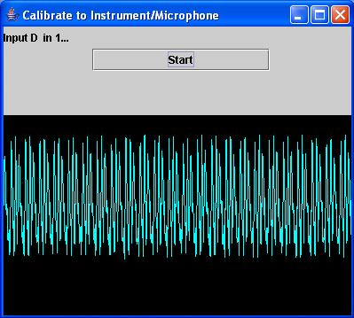
Sadly, this approach did not work at all as planned. Apparently, small human error makes the calibrations vary so much as to render them useless. Therefore, I decided (by trial and error) simply to say that a note exists if its fundamental frequencies and first five harmonics are above 3000.
February 21, 2006:
Now that my program works reasonably well, it is time to test it so that I can quantitatively analyze its performance. I will be playing half of "Twinkle Twinkle Little Star" and a one-octave G Major scale, both at five different tempos (50bmp, 75bmp, 100bmp, 125bmp, 150bmp). I will check to see how many of the notes it actually detects at some point while they are being played and what percentage of the calculated sixteenth notes are not present (extraneous data).
Here are the results below:
G Major
Twinkle Twinkle
Tempo
Notes detected
Percent Incorrect Data
50 bmp
8/16
0%
75 bmp
14/16
3.7%
100 bmp
15/16
12%
125 bmp
16/16
7.9%
150 bmp
16/16
27%
Tempo
Notes detected
Percent Incorrect Data
50 bmp
15/24
0%
75 bmp
23/24
0.79%
100 bmp
24/24
0.69%
125 bmp
24/24
1.7%
150 bmp
24/24
2.8%
ANALYSIS/CONCLUSION: At lower tempos, there are little or no extraneous notes, but fewer notes are actually detected. On the other hand, higher tempos are able to pick up almost every single note at some point while I'm playing it, but a bunch of extra notes that I don't play show up. This could be explained because of Fourier transform logic and the fact that an integer number of cycles has note been reached with the smaller sample sizes for higher tempos.